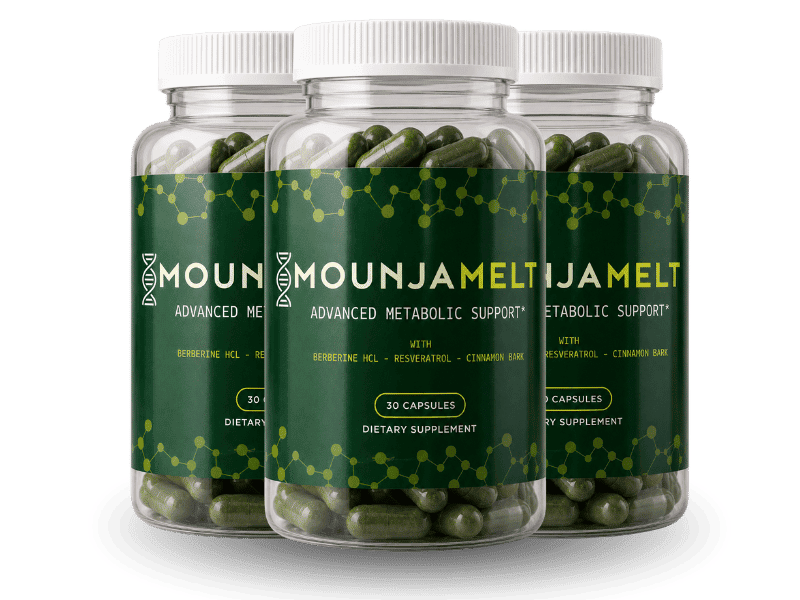

What Is MounjaMelt And How Does It Work?
Ask someone who has actually quieted it, and they never describe hunger. They describe a switch going off.
Not the growl-in-your-stomach kind of hunger — the other kind. The running inventory of what's in the fridge, drafted before you've finished breakfast. The math you do about how long until you can reasonably eat again. The trip to the kitchen forty minutes after a full meal, opening a cabinet for no reason you could explain to anyone watching. Doctors don't have a clean name for it. The people on the newer injectable drugs do, informally — they call it food noise, and the thing nearly all of them report first isn't weight loss. It's that the noise stops.
That's the actual target here, and it's a different target than "eat less." Willpower is a finite resource you spend arguing with a signal; MounjaMelt is built around turning the signal down instead.
It's a once-a-day capsule, and the formula is built around two working parts: Berberine HCl, one of the most studied compounds for blood sugar and insulin behavior, and a proprietary GLP Formula aimed at the body's own satiety signaling — the same general pathway the injectable drugs act on, approached from a different door.
The thesis behind it is specific, not vague: somewhere past 35, blood sugar handling and insulin sensitivity start slipping, and that slippage is what turns the appetite signal from a whisper into something you can't ignore. Support the underlying signaling and the noise tends to settle on its own — no needle, no refrigerated pen, no monthly appointment built into your calendar.
Whether that's the right door for you depends on where you're standing. Plenty of people looked hard at the injections, ran the numbers, and stepped back — not because they didn't want results, but because a needle and an ongoing prescription weren't what they signed up for. This is built for that exact person.
MounjaMelt Ingredients
Six ingredients, and none of them are filler — every one earns a place by pointing at the same mechanism from a different angle.
- Berberine HCl: The anchor of the formula. Extensively researched for its role in blood sugar regulation, insulin sensitivity, and general metabolic function — if degraded glucose handling is really what's driving the noise up, this is the piece working on it most directly.
- GLP Formula (proprietary blend): Targets the body's own GLP signaling — the internal messaging that governs appetite and how long "full" actually lasts after a meal. This is the ingredient aimed straight at the noise itself, not just the metabolism around it.
- Cinnamon Bark Extract: A traditional botanical linked to a steadier post-meal blood sugar response and fewer carbohydrate cravings — active in exactly the window where a second wave of noise usually shows up.
- Gymnema Sylvestre: Traditionally nicknamed the "sugar destroyer," associated with reduced sugar absorption in the gut and dampened sweet cravings. It has one unusual, felt property — it can briefly mute how sweet things taste on the tongue, which makes it one of the rare ingredients you can notice working in real time.
- L-Carnitine + Green Tea Extract: The half of the formula built for using stored fat, not just craving less of it. L-Carnitine shuttles fatty acids into the mitochondria to be burned as fuel; green tea's catechins support that same thermogenic process.
- Resveratrol: An antioxidant rounding out the formula, supporting general cellular and metabolic health.
Laid out that way, the architecture is deliberate: four ingredients working the blood sugar and satiety side, two working the burn side. Nothing in the six is there to pad a label.
MounjaMelt Side Effects
Nothing on this label is unfamiliar to your body.
Berberine and gymnema come from traditional botanical use. Cinnamon bark and green tea are pantry-adjacent. L-carnitine is an amino acid your own cells already produce and run on. Resveratrol is the same antioxidant found in grape skin. This is a supportive-dose botanical formula, not a pharmaceutical agent forcing a system to behave differently than it otherwise would.
That distinction is exactly why a lot of people land here instead of at the pharmacy. The injectable route works by acting directly and forcefully on hormonal pathways, and that comes with a well-documented set of tradeoffs people weigh carefully before starting. MounjaMelt takes a gentler road — supporting signaling the body already runs, rather than overriding it — and the side-effect profile tends to follow that same gentler shape. There are no harsh stimulants in the formula either, so there's no jittery, racing-heart sensation standing in for progress.
Across people using MounjaMelt as directed, there isn't a widespread pattern of adverse reports, and it's manufactured in an FDA-registered, GMP-certified facility in the United States, with a domestic-only supply chain from production to your door.
As with any dietary supplement, check with a healthcare professional first if you have an existing medical condition or take prescription medication.
MounjaMelt Dosage
One capsule. Once a day. That's the entire routine.
Each bottle holds 30 capsules — a full 30-day supply — so a glance at what's left tells you honestly whether you've actually kept it up, no guessing required.
Set that against the alternative for a second. A weekly injection means a standing prescription, a delivery you have to track, refrigeration, and a day of the week that now belongs to a needle. This is a capsule that goes down with whatever else you already take in the morning.
Consistency is what actually pays off here — support for blood sugar and satiety signaling builds over days, not in a single dose, and it holds only with steady input. Three days on, three days off doesn't produce a smaller result. It produces no result, and the easy but wrong conclusion is that the product didn't work.
Most people anchor it to something already automatic — coffee, breakfast, brushing their teeth — because a routine tied to something automatic survives a chaotic week, and a routine that depends on remembering usually doesn't.
Larger multi-bottle options exist for anyone planning past a single month, and they bring the per-bottle cost down as the supply goes up. Every option is a single purchase — there's no subscription and nothing recurring buried in checkout.
Stick to one capsule daily; there's no benefit to exceeding it.
MounjaMelt – Refund Policy
Sixty days. That's the window, and it runs from the date of purchase, backed by a 100% money-back guarantee.
It's worth sitting with why a company attaches sixty full days to a product instead of the thirty a lot of the category offers. A guarantee that long only makes sense if the people behind the formula genuinely expect it to hold up over two months of real use — a short window protects a company; a long one is a bet on the product. Set beside the alternative, that bet matters more than it looks: a course of injections is a major financial commitment with no comparable guarantee attached anywhere in that process.
Full terms and the exact process for requesting a refund are laid out on the official MounjaMelt website.
MounjaMelt Customer Reviews
 Denise Whitfield
Columbus, OH
Verified Purchase – 3 Bottles
Denise Whitfield
Columbus, OH
Verified Purchase – 3 Bottles
"I work a desk job and by 3 p.m. every single day I was at the vending machine down the hall, and it wasn't because I was hungry — I'd just eaten lunch two hours before. I'd tried cutting snacks out of the house entirely and it didn't matter, I'd just walk to get them. About five weeks into MounjaMelt I noticed I'd walked past that machine three afternoons in a row without even registering it was there. Down 14 pounds since, and the part that actually surprised me was the vending machine, not the scale."
 Robert Kaine
Tulsa, OK
Verified Purchase – 2 Bottles
Robert Kaine
Tulsa, OK
Verified Purchase – 2 Bottles
"I looked hard at the injections. Priced them out, read the fine print on the ongoing cost, and backed away — I'm 62 and retired, and an indefinite monthly bill wasn't something I wanted to build my budget around for the rest of my life. I gave MounjaMelt two months before I'd let myself judge it. Nine pounds down, but honestly what I noticed first was that I stopped finishing my wife's plate after mine was already empty. That habit is just gone."
 Carla Jennings
Sacramento, CA
Verified Purchase – 6 Bottles
Carla Jennings
Sacramento, CA
Verified Purchase – 6 Bottles
"Menopause rearranged everything about how my body handled food, seemingly overnight. I'd get this crash around four in the afternoon where I needed something sweet immediately or I couldn't function, and it didn't used to be like that. Six bottles in, that crash doesn't happen anymore — I eat lunch, and four o'clock just passes like a normal hour now. Seventeen pounds since I started, and I've kept it off through two holidays, which has genuinely never happened for me before."
MounjaMelt – Where To Buy
Where you buy this matters more than what you pay for it.
MounjaMelt isn't sold through Amazon, eBay, or Walmart, though similar-looking bottles occasionally turn up on those platforms anyway. The manufacturer ships domestically with no overseas warehouses anywhere in the chain specifically to keep control over what reaches customers — which means anything arriving through a third-party marketplace seller has, by definition, traveled through a chain the manufacturer never touched and cannot vouch for.
The guarantee and the support both travel with the official order, and nowhere else. A marketplace purchase never actually reaches the manufacturer's system, so the sixty-day window simply doesn't attach to it — there's no account to claim it against. That's a real thing to give up over a few dollars of difference.
Ordering direct keeps that chain unbroken from the facility to your door, guarantee and support included. Before you check out, confirm the URL in front of you is the official MounjaMelt site.
To ensure you're getting the authentic product, most users choose to visit the official website directly.
Is MounjaMelt A Scam?
No — and the honest answer requires being precise about what MounjaMelt is, and what it deliberately isn't.
MounjaMelt is a botanical supplement supporting the body's own GLP signaling pathway. It is not a GLP-1 medication, contains none, and doesn't claim to match one dose for dose. Anyone expecting injection-grade results from a capsule is measuring it against the wrong category, and a product that implied otherwise would deserve real suspicion. What's actually on offer is a non-prescription, non-injectable approach to a related signaling pathway — a smaller promise, aimed at people for whom the bigger one was never really on the table.
The rest of it checks out on its own terms. Berberine, a genuinely researched compound, anchors the formula. Manufacturing happens in an FDA-registered, GMP-certified U.S. facility with a domestic-only supply chain. It's a single purchase, with no auto-ship quietly added at checkout. Sixty days to test it, backed by a full money-back guarantee.
Where it stops matters too. Stubborn weight after 35 sometimes has causes that a botanical formula was never built to reach — and if that's your situation, or if the injections are genuinely the right call for you, that's a real answer and this isn't a substitute for it.
But if what's actually running your evenings is food noise you never signed up for, and a needle and a monthly bill aren't where you want to start, the math here is simple. One capsule, sixty guaranteed days. If nothing changes, the guarantee covers it and the only thing spent was the two months of waiting.
As with any dietary supplement, check with a healthcare professional first if you have an existing condition or take prescription medication.
For those who want to verify product details or check current availability, the official MounjaMelt website remains the safest and most reliable option.
